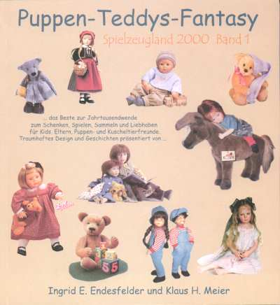

|
Puppen-Teddys-Fantasy
Spielzeugland 2000 Band 1
von Ingrid E. Endesfelder und Klaus H. Meier
152 Seiten, gebunden mit Schutzumschlag
mit 224 Abbildungen
Dietz Verlag Berlin GmbH 1998
39,90 DM ISBN 3-320-01989-9 |

|
|
Mit dem Buch
Puppen - Teddys - Fantasy wird die Reihe Spielzeugland
2000 eröffnet. Sie versteht sich als buntes Kaleidoskop
der Welt des besonderen Spielzeugs. Auf unterhaltsame Art
wird der Leser im Band 1 ins ewig junge Spielzeugland
entführt. Persönliche Auskünfte von Künstlern und
Designern sowie Porträts weltbekannter Firmen geben
einen lebendigen Einblick, wie schöne Puppen, Plüschtiere
und Teddys entstehen, welche Trends an der Schwelle zum
neuen Jahrtausend Gestalt annehmen. 1999 erscheint: Reine Männersache? Phantastische Welt der Modelle Modelleisenbahn - mehr als ein Hobby. TT die ideale Spur, von Zeuke und Rokal bis Tillig. Modellautos - der Silberpfeil von Schuco und neueste Modelle en miniature. Im Reich des bekannten Blechspielzeugsammlers und Experten Rudger Huber. Was verband Friedrich Fröbel und die Brüder Lilienthal? Die Geburtsstunde der kleinen Bausteine. Ankerstein - die Renaissance eines legendären Baukastens. Santa Maria - die Großen der Meere entstehen im Model in einer kleinen Werkstatt am Bodensee.
|
|